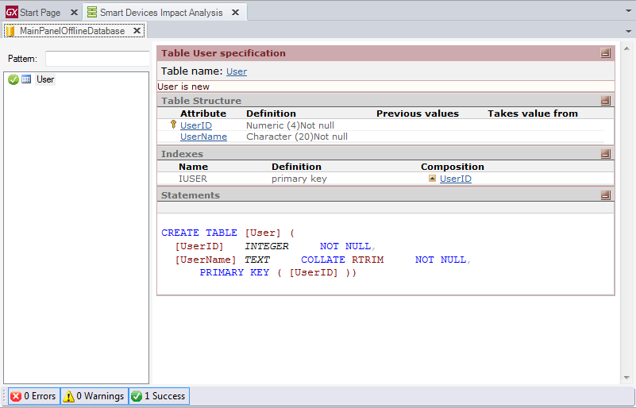

As mentioned in the document Offline Database Object Table selection, this object is in charge of selecting the tables that the device is going to use in order to work Offline. But how and when are these tables created in the device? How are they reorganized when the table model changes? The objective of this document is to answer these questions. Smart Devices Impact AnalysisOnce the Offline Database object determines the selected Tables, GeneXus makes a Smart Devices Impact Analysis that shows all the selected tables and their creation statements.  When is this impact analysis called?This impact analysis is always made after the first Build operation of the application when Offline architecture is selected. After that, it is called in the following situations:
Reorganization filesAfter the Impact Analysis is done, reorganization files are created for each Smart Device generator enabled for the Native Mobile Generator. These files include the routines to create the database in the device once the application is installed. Offline Local Database ReorganizationThe Offline local database is created when the application is launched for the first time in the device. In order to do this, the reorganization files must be created as they include the database creation routines. After that, every time the offline database model changes, the reorganization files re-create the local database tables from scratch1, losing all their existing data. The exception here is the GXPendingEvents table, where the pending events (those that were not syncrhonized) will be copied into the new database, in order to be sent to the server in the next sync process. To learn more, read SynchronizationEventsAPI external object (X Evolution 3) 1 To know whether the database needs to be re-created, the MD5 of the ReorganizationScript.txt is compared. Important considerations
See also
|
| Backlinks | |
| Create Offline Database | Category:Offline Database object |
| Toc:Offline Native Mobile Applications |